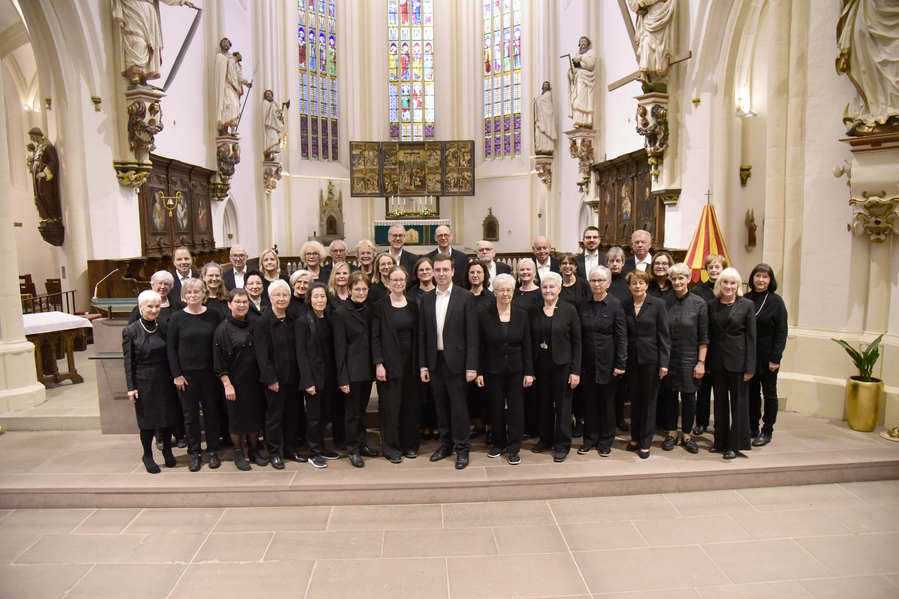

Über uns

Der Probstei Chor ist ein traditionsreicher Chor an der Basilika minor St. Cyriakus in Duderstadt.
Unsere Kantorei sieht ihre Hauptaufgabe in der musikalischen Verkündigung innerhalb des Gottesdienstes.
Wir stellen aber auch unsere hohe Leistungsfähigkeit in geistlichen Konzerten unter Beweis, deren Repertoire von Barock bis zur Moderne reicht.
Auch in Fernsehgottesdiensten haben wir schon mitgewirkt.
Wir sind ca. 45 Mitglieder im Alter von 30 bis 75 Jahren – neue Sänger:Innen sind jederzeit willkommen, auch wenn sie nicht zu unserer Gemeinde gehören.
Wir proben jeden Mittwoch von 20:00 bis 21:30 Uhr im großen Saal des Gemeindehauses, danach besteht die Möglichkeit zum Austausch.
Geselligkeit wird bei uns großgeschrieben, so machen wir jährlich Chorfahrten, Übungswochenenden, nehmen an Kirchenmusiktagen teil und gedenken traditionell der Schutzpatronin der Kirchenmusik, der hl. Cäcilia, mit einem großen Chorfest.